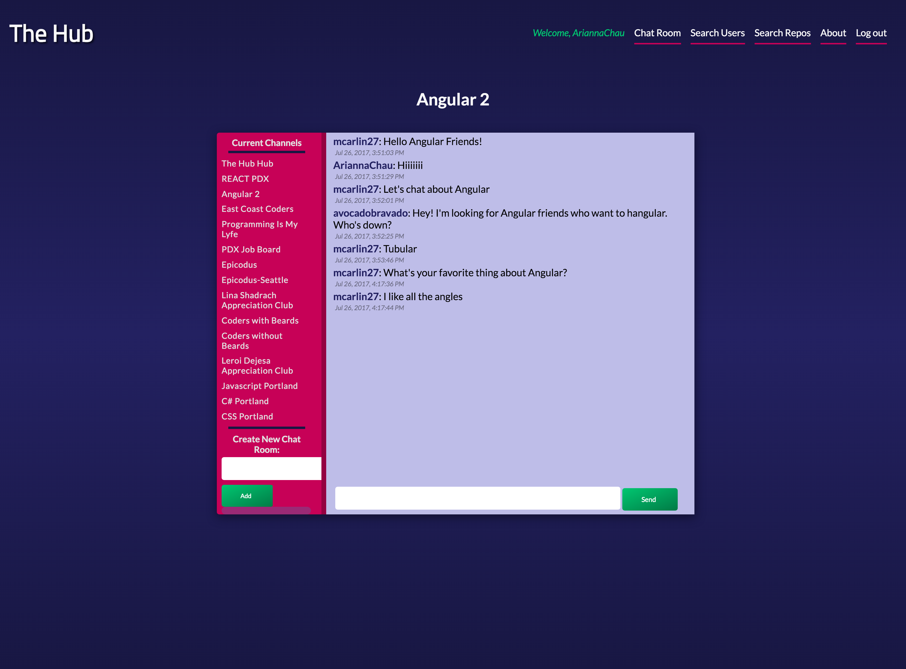
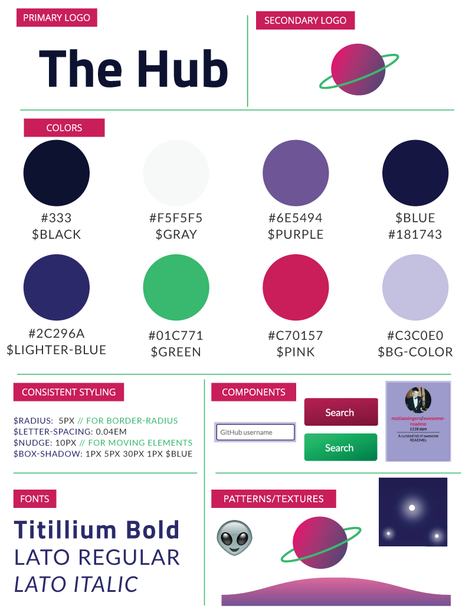
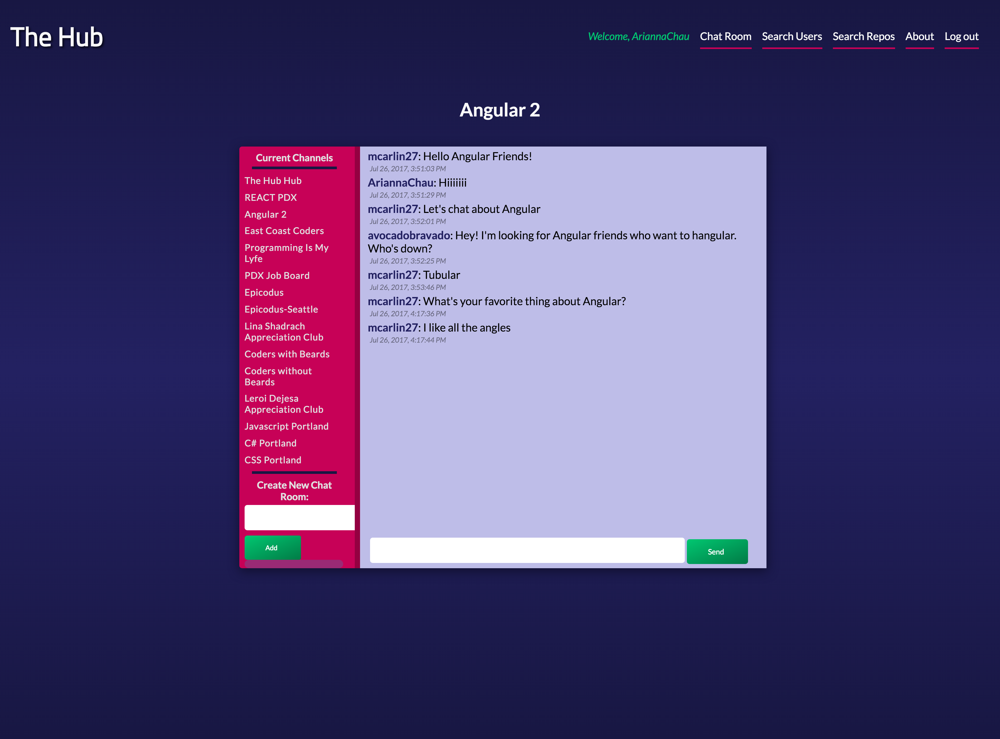
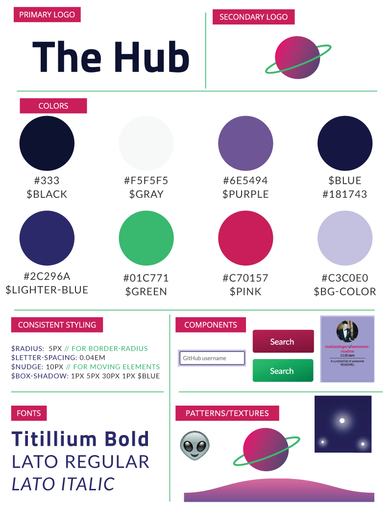
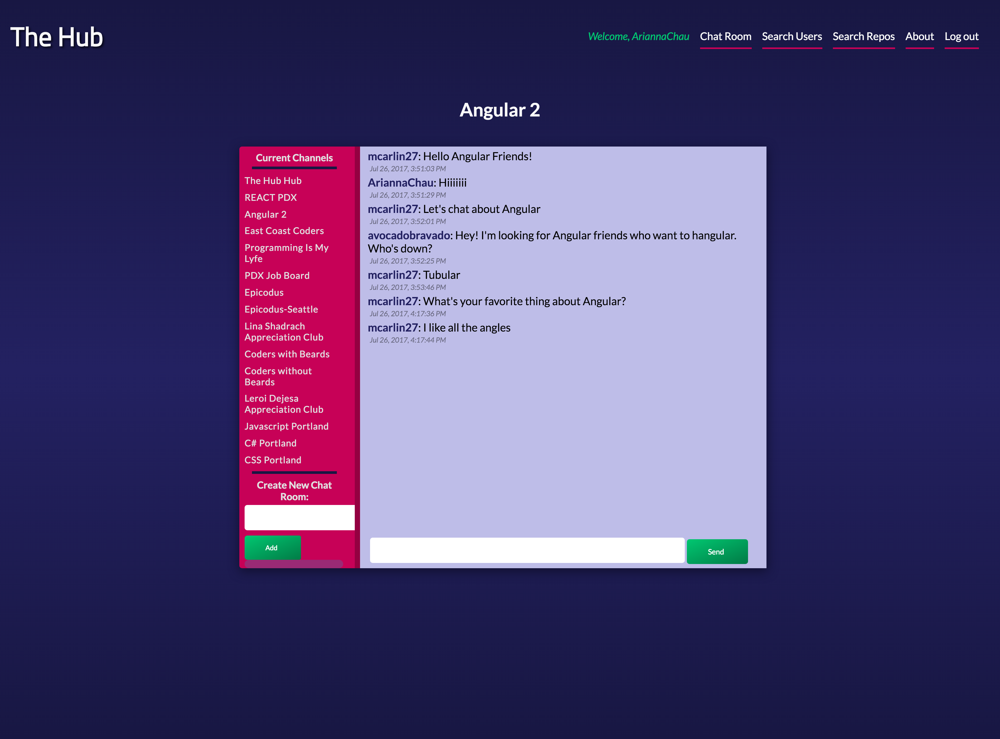
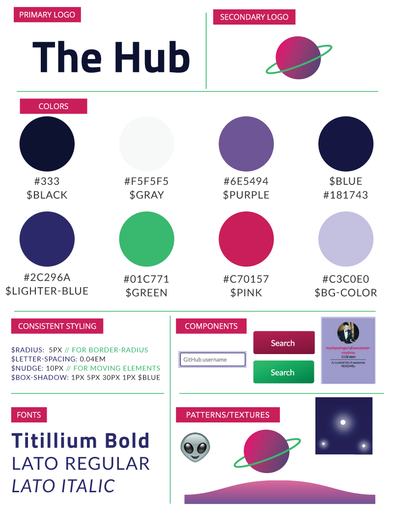

This was a big project. It was a group week project at Epicodus where two front and developers collabed with two back end developers. My front end partner, Rose Sponseller, and I were in charge of the design aspects. The layout, color scheme, branding guide and brand identity. We took inspiration from the Github Desktop website. We took the dark, space theme and put our own twist on it. We wanted it to be relaxing and overall pleasant to look at.
My most proud moment of this project was I created the planet on the homesceen from pure CSS. It took about 6 hours but I was stoked on how it turned out.

